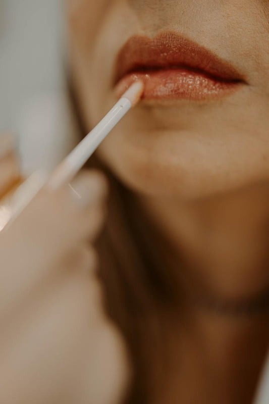
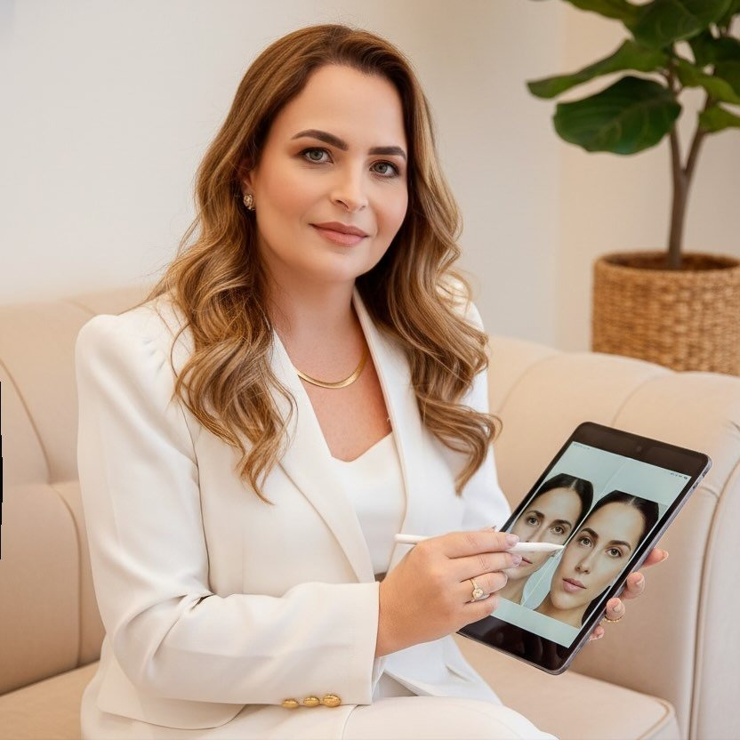
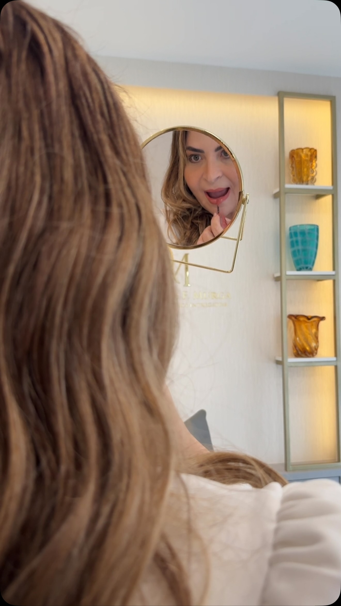

Dra. Daniele Murga
Cuidados personalizados que unem ciência, saúde e bem-estar, em Campo Grande, Rio de Janeiro.
Marque uma consultaDra. Daniele Murga
A Dra. Daniele Murga é médica dermatologista, formada em Medicina e Dermatologia pela Universidade Federal Fluminense, UFF, com formação em Nutrologia pela ABRAN e título de especialista concedido pela Sociedade Brasileira de Dermatologia, SBD.
Atua com foco em Dermatologia Clínica, Estética e Medicina Integrativa, oferecendo cuidados personalizados que unem ciência, saúde e bem-estar. Seu trabalho valoriza a beleza natural, o equilíbrio do corpo e o acolhimento de cada paciente, com excelência técnica e olhar humano.
Especialidades



A seguir, todos os procedimentos realizados na clínica, organizados por especialidade, pra você entender exatamente qual cuidado faz sentido pro seu momento.
Cada tratamento é pensado de forma individual, respeitando a história e as necessidades de cada paciente. A proposta une técnica e ciência com um olhar atento pra estética e pro bem-estar como um todo.
Do primeiro atendimento ao acompanhamento contínuo, a ideia é que você entenda cada etapa do processo, com clareza sobre o que esperar de cada procedimento.
Preenchimento facial e corporal, aplicação de toxina botulínica em pontos avançados, tratamentos a laser e protocolos de rejuvenescimento.
Emagrecimento, reposição hormonal, reposição de vitaminas e oligoelementos, tratamento de disbiose intestinal e da menopausa.
Dermatologia Estética
Preenchimento facial e corporal, e aplicação de toxina botulínica em pontos avançados, sempre com planejamento individual pra cada paciente.
Medicina Integrativa
A clínica
A clínica oferece um ambiente moderno, sofisticado e acolhedor, projetado para proporcionar conforto e tranquilidade a seus pacientes. Com salas de atendimento e procedimentos equipadas com tecnologia de ponta, a clínica prioriza a segurança e a qualidade em cada detalhe.
O espaço conta com uma atmosfera serena, onde a privacidade e o bem-estar dos pacientes são sempre prioridades. Tudo foi pensado para criar uma experiência harmoniosa e personalizada, desde a consulta até o pós procedimento.
Depoimentos
Quero deixar registrado o quanto sou grata pelo cuidado e atenção da Dra. Daniele. Desde o primeiro momento, ela foi extremamente atenciosa explicando cada detalhe do diagnóstico e tratamento de forma clara e compreensível. Uma excelente profissional e super simpática. Recomendo a com toda a confiança.
Daniele Teles
A doutora é muito simpática e o atendimento é perfeito. Ademais, tive resultados surpreendentes. Ela passou suplementação manipulada de acordo com as minhas necessidades e também um produto para aplicar na pele. E, com apenas 2 a 3 semanas, os resultados já apareceram. Recomendo demais.
Vick Franco
Me trato com a Dra Daniele Murga há mais de 10 anos. Minha pele é outra desde que a conheci. Uma médica completa e que não cansa de se capacitar. Temos uma relação de confiança e sinceridade. Tanto que toda vez que preciso mudar o plano de saúde, ligo no consultório para saber se aceita. Amo.
Luciana Valente
Entre em contato